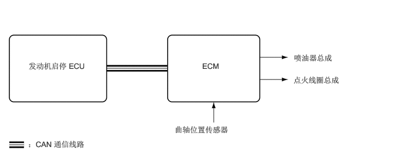
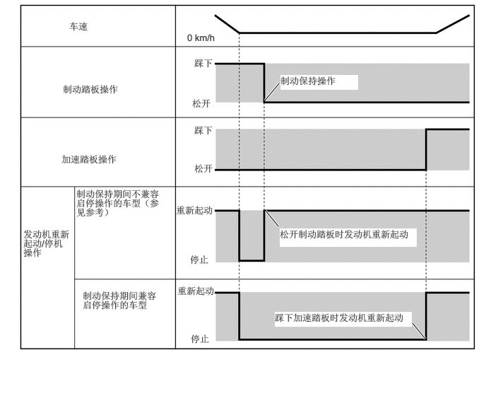

主要零部件的功能
| 零部件 | 功能 | |
|---|---|---|
| 发动机启停 ECU | 根据各传感器和开关的信号，向 ECM 发送发动机停机或重新起动信号。 | |
| 发动机启停 ECU | 备用增压转换器 | ·
供应蓄电池电压以补偿发动机重新起动时发生的电压下降，从而防止各系统操作因蓄电池电压低而中断。 ·
向带电磁阀的机油泵总成提供蓄电池电压。 |
| 驻车档/空档位置开关总成 | 检测换档杆是否处于驻车档/空档位置，并向发动机启停 ECU 发送信号。 | |
| 真空传感器总成 | 检测制动助力器真空压力，并向发动机启停 ECU 发送信号。 | |
| 发动机罩锁总成 | 发动机罩门控灯开关 | 检测发动机罩是打开还是关闭，并向发动机启停 ECU 发送信号。 |
| 前门门控灯开关总成（驾驶员） | 检测驾驶员车门是打开还是关闭，并利用 CAN 通信通过主车身 ECU（多路网络车身 ECU）向发动机启停 ECU 发送信号。 | |
| 前排座椅内安全带总成（驾驶员） | 前排座椅安全带带扣开关（驾驶员） | 检测驾驶员座椅安全带是否系紧，并利用 CAN 通信通过主车身 ECU（多路网络车身 ECU）向发动机启停 ECU 发送信号。 |
| 空调放大器总成 | 将车外温度信号和发动机重新起动信号发送至发动机启停 ECU。 | |
| 环境温度传感器（热敏电阻总成） | 将车外温度信号发送至空调放大器总成。 | |
| 组合仪表总成 | 启停指示灯 | ·
发动机因启停控制而停止时点亮。 ·
怠速停止期间，在换档杆置于 D 的情况下打开驾驶员车门时，该指示灯闪烁以告知驾驶员怠速停止已取消且发动机将重新起动。 |
| 启停取消指示灯 | ·
启停系统取消开关（电动驻车制动开关总成)禁止启停系统操作时，该指示灯点亮以告知驾驶员系统已禁用。 ·
如果检测到系统故障，则启停取消指示灯闪烁以告知驾驶员。 |
|
| 多信息显示屏 | ·
显示发动机开关置于 ON (IG) 位置到置于 OFF 位置期间进行怠速停止的时间，及上次按下复位开关后进行怠速停止的时间。 ·
显示启停系统或警告信息等的设定。 |
|
| 启停系统取消开关（电动驻车制动开关总成） | 按下启停系统取消开关（电动驻车制动开关总成）可以取消系统操作。 再次按下开关或关闭电源然后再打开即可恢复系统操作。 | |
| ECM | ·
向发动机启停 ECU 发送与发动机状态相关的各种信息。 ·
根据来自蓄电池状态传感器总成的信号，判断安装在车辆上的蓄电池是否为专用蓄电池，并将判断结果发送至发动机启停 ECU。 |
|
| 制动执行器总成 | 防滑控制 ECU | 向发动机启停 ECU 发送车速信号。 |
| 空气囊 ECU 总成 | 向发动机启停 ECU 发送空气囊展开信息（如果发生碰撞）和减速信号。 | |
| 主车身 ECU（多路网络车身 ECU） | 将前门门控灯开关总成（驾驶员）信号和前排座椅安全带带扣开关（驾驶员）信号发送至发动机启停 ECU。 | |
| 带电动机的动力转向 ECU 总成 | 向发动机启停 ECU 发送电动动力转向辅助信号。 | |
| 外部备用增压转换器（环保驾驶车辆转换器总成） | 发动机停机时对电压下降进行补充，以稳定音频输出。 | |
| 蓄电池状态传感器总成 | 检测蓄电池充电和放电量，并向 ECM 发送信号。 | |
| 刹车灯开关总成 | 检测制动踏板松开状态，并通过 ECM 向发动机启停 ECU 发送信号。 | |
| 加速踏板传感器总成 | 检测加速踏板开度，并通过 ECM 向发动机启停 ECU 发送信号。 | |
| 曲轴位置传感器 | 检测发动机停止时的曲轴转角，并将该信息发送至 ECM。 | |
| 带电磁阀的油泵总成 | 怠速停止期间保持 ATF 压力。 | |
| 发动机冷却液温度传感器 | 通过 ECM 将冷却液温度发送至发动机启停 ECU。 | |
| 发电机总成 | 通过 ECM 将发电机总成发电情况发送至发动机启停 ECU。 | |
系统控制
早期喷射控制
早期喷射控制缩短了启停系统停止发动机后发动机重新起动所需的时间，从而实现了平稳的初始加速操作。
通过启停系统停止发动机时，ECM 会存储曲轴位置传感器检测到的曲轴转角。
驾驶员进行重新起动操作时，ECM 判断需要进行的喷油操作并决定要点火的气缸。 然后，ECM 利用该信息起动发动机。

上坡起步辅助功能
通过在停车时踩下制动踏板可调节之前的 AT 车辆驱动力（爬行现象），并可通过在起动车辆时松开制动踏板传输驱动力。 但是，起动一个配备有启停系统且其发动机因激活怠速停止功能而停止的车辆时，由于松开制动踏板后发动机将起动，因此产生驱动力前会有短暂的延时。
上坡起步辅助功能是一个辅助系统，可在坡路上辅助配备有启停系统的车辆起动，以应对上述情况，从而保持制动液压力，直到产生足够的驱动力。
上坡起步辅助功能不仅在斜坡上工作，在水平路面上也可工作。
可能会听到异常声响，但这并不代表制动器有故障。
制动踏板响应性能可能会变化或可能会振动，但这并不代表其有故障。
系统禁止控制
出于安全性、蓄电池保护、舒适性和 ECU 学习等原因，如果满足下列任一条件，则发动机启停 ECU 将禁止启停系统操作。
| 禁止原因 | 条件 |
|---|---|
|
*：如果已通过断开蓄电池或由于其他原因清除 ECU 学习值，将会禁止启停系统操作，直至 ECU 学习完成。 |
|
| 安全性 | 如果在发动机罩打开的情况下起动发动机，例如，跨接起动时，无法确保发动机重新起动操作。 因此，将禁止启停系统操作。 在下一行程中将恢复系统操作。 |
| 如果在发动机停机前打开驾驶员车门或发动机罩，将会禁止启停系统操作以确保安全。 | |
| 制动助力器真空不足。 | |
| 发动机停机前松开驾驶员座椅安全带。 | |
| 发动机催化剂快速预热。 | |
| 蓄电池保护 | 刷新充电持续 0.5 至 1 小时，且每行驶约 30 小时进行一次。 刷新充电时将禁用启停系统操作。 |
| 怠速停止率高于预定率时，则将禁用启停系统操作。 | |
| 蓄电池电压降低且蓄电池集成电流值变为阈值或更低时，将禁用启停操作。 | |
| 舒适性 | 如果在车外温度高且蒸发器温度高时运行空调，将会禁止启停系统操作。 |
| 如果在车外温度低时运行空调，将会禁止启停系统操作。 | |
| 如果在车外温度低且发动机冷却液温度低时运行加热器，将会禁止启停系统操作。 | |
| 如果前 DEF 开关和鼓风机开关打开，将会禁止启停系统操作。 | |
| ECU 学习 | ECU 学习未完成。* |
| 操作 | 如果在操作方向盘时停止车辆，将会禁止启停系统操作。 |
警告控制
启停系统停止发动机时，以下操作中的一项可警告驾驶员：鸣响组合仪表总成内的多功能蜂鸣器、使启停指示灯闪烁、显示组合仪表总成内的多信息显示屏、重新起动发动机或阻止发动机重新起动。
| 操作 | 警告控制 |
|---|---|
| 打开发动机罩。 | 发动机停机（模式切换为“熄火”，且将发动机开关置于 OFF 位置，然后置于 ON (IG) 位置后才能重新起动发动机）。 |
| 换档杆置于 D 的情况下打开驾驶员车门。 | 发动机起动、警告蜂鸣器鸣响且启停指示灯闪烁。 |
| 松开驾驶员座椅安全带。 | 发动机起动。 |
发动机停机和重新起动的操作条件
如果检测到所有这些条件，发动机可能会停止。
| 项目 | 工作条件 | |
|---|---|---|
|
*1：蓄电池电解液温度变为 -15°C (5°F) 或更低，或 75°C (167°F) 或更高时，禁用控制。 禁用控制且蓄电池电解液温度升至 -10°C (14°F) 或更高或降至 70°C (158°F) 或更低后，执行控制。 *2：关于蓄电池集成电流 在启停系统中，发动机启停 ECU 根据蓄电池状态（充电/放电状态）切换系统控制模式（允许/禁止启停系统控制），以保护蓄电池并确保稳定的发动机重新起动性能。 根据基于蓄电池状态传感器总成信号计算的集成电流值确定蓄电池充电/放电状态。 通过蓄电池状态传感器总成检测到的电流（安培）乘以时间（秒）可得出集成电流值，并以 A-sec 为单位表示。可使用 Global TechStream (GTS) 进行测量。 发动机启停 ECU 根据集成电流值确定是否充电，如果该值为阈值或更像，则禁止启停系统控制，因为蓄电池可能无法起动发动机。 阈值根据蓄电池充电控制状态而变化。 *3：集成电流值变为 -16434 A-sec 或更小时禁止控制以为蓄电池充电，直至值变为 -15444 A-sec 或更大继续控制。 *4：集成电流值变为 -990 A-sec 或更小时禁止控制以为蓄电池充电，直至值变为 0 A-sec 或更大继续控制。 *5：重新起动发动机时，确保适当的制动力以使车辆不会前进。 |
||
| 怠速停止 | 发动机冷却液温度 | 40°C 至 105°C（104°F 至 221°F） |
| AT 油温 | 25°C 至 111°C（77°F 至 231.8°F） | |
| 驾驶员车门 | 关闭 | |
| 制动助力器真空 | 真空在标准范围内（在水平表面，高于 42.5 kPa (0.5 kg/cm 2, 6.2 psi))
（根据制动主缸液压改变） |
|
| 启停系统取消开关（电动驻车制动开关总成） | 关闭状态 | |
| 道路坡度 | -6° 至 8° | |
| 车速 | 车速从定速变为 0 km/h。 | |
| 发动机转速 | 1250 r/min 或更低 | |
| 换档杆位置 | D | |
| 行驶模式 | ECO 或 NORMAL 模式 | |
| 驾驶员座椅安全带 | 系紧座椅安全带后经过 3 秒或更长时间。 | |
| 发动机罩 | 关闭 | |
| 蓄电池电压 | 发动机起动时为 7.6 V 或更高。 | |
| 蓄电池电解液温度 | -10°C 至 70°C（14°F 至 158°F）*1 | |
| 蓄电池集成电流*2 | 集成电流值满足下列任一条件时：
·
-15444 A-sec 或更大：蓄电池充电控制状态为充电控制协同模式、启停独立模式、低温/高温模式或低温模式。*3 ·
0 A-sec 或更大：蓄电池充电控制状态为启停限制模式。*4 |
|
| 空调 | “冷却或暖机”或除霜功能不工作时。 | |
| ECU 学习 | 已完成 | |
| 环境温度 | -5°C (23°F) 或更高 | |
| 转向操作 | 不工作 | |
| 加速踏板 | 松开加速踏板。 | |
| 制动踏板*5 | ·
踩下制动踏板。 ·
制动主缸液压为 1.2 MPa (12.2 kg/cm2, 174 psi) 或更高。 （根据纬度改变） |
|
如果检测到下列任一条件，发动机将重新起动。
| 项目 | 工作条件 | |
|---|---|---|
| 发动机重新起动 | 制动助力器真空 | 制动助力器真空不足 |
| 空调 | 空调打开且空调放大器总成计时器计时结束时。 | |
| 自动鼓风机功能运行且空调放大器总成计时器计时结束时。 否则，发动机启停 ECU 的计时器计时结束。 | ||
| 空调开关或鼓风机开关打开。 | ||
| 蒸发器温度超过阈值（阈值随温度、湿度和太阳辐射量的变化而变化） | ||
| 启停系统取消开关（电动驻车制动开关总成） | 启停系统取消开关（电动驻车制动开关总成）打开。 | |
| 蓄电池 | ·
蓄电池电压低于 11.4 V。 ·
蓄电池集成电流变为阈值或更低。 |
|
| 驾驶员车门 | 打开驾驶员车门。 | |
| 驾驶员座椅安全带 | 松开驾驶员座椅安全带。 | |
| 车速 | 输入车速信号。 | |
| 加速踏板 | 踩下加速踏板。 | |
| 制动踏板 | 松开制动踏板。 | |
| 换档杆 | 从 D 位置移至其他位置。 | |
| 行驶模式 | 除 ECO 或 NORMAL 模式外 | |
| 转向操作 | 方向盘转动 25 度或更多。 | |
制动保持功能操作期间的怠速停止控制
怠速停止状态下制动保持功能运行时，即使松开制动踏板怠速停止状态仍会继续。
通过踩下加速踏板，发动机重新起动且制动保持功能取消。
根据车辆状态，即使在制动保持期间，可能也不会进行怠速停止。
根据车辆状态，制动保持期间发动机可能会重新起动。 在此情况下，由于继续进行制动保持，车辆不会起步。
启停系统停止发动机期间，如果未满足以下任一工作条件，则制动保持系统将不工作。 如果自动施加了电动驻车制动，则发动机将重新起动。

功能
设定启停系统
通过使用方向盘装饰盖开关总成上的方向盘装饰盖开关和组合仪表总成上的多信息显示屏或通过按住启停系统取消开关（电动驻车制动开关总成），可在 Standard 和 Extended（启停系统享有优先权）之间切换空调系统打开时因启停控制导致的发动机停机操作时间。
诊断
发动机启停 ECU 检测到故障且 CAN 通信正常时，发动机启停 ECU 记录与故障相关的信息。 此外，组合仪表总成内的启停指示灯闪烁以告知驾驶员 CAN 通信正常。
发动机启停 ECU 还会存储与故障相关的诊断故障码 (DTC)。 可使用 Global TechStream (GTS) 读取 DTC。